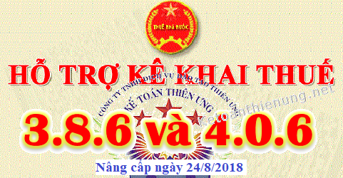

Phần mềm HTKK 4.0.6 và phần mềm HTKK 3.8.6 là 2 phần mềm hỗ trợ kê khai thuế mới nhất hiện nay được Tổng cục thuế nâng cấp ngày 24/08/2018. Các bạn Tải phần mềm HTKK 3.8.6 - 4.0.6 miễn phí về tại đây:
Chú ý: Các bạn phải xác định xem DN các bạn ở Tỉnh, Thành phố nào để Tải phần mềm HTKK cho đúng nhé.
- Phần mềm HTKK 4.0.6: (Dành cho người nộp thuế thuộc Cục Thuế các tỉnh/thành Lào Cai, Điện Biên, Hòa Bình, Lai Châu, Thái Nguyên, Bắc Giang, Hà Giang, Bắc Cạn, Cao Bằng, Lạng Sơn, Hải Dương, Hưng Yên, Yên Bái, Phú Thọ, Thái Bình, Đà Nẵng, Quảng Trị, Thừa Thiên - Huế, Quảng Nam, Quảng Ngãi, Bình Định, Phú Yên, Khánh Hoà, Ninh Thuận, Bình Thuận, Lâm Đồng, Kon Tum, Gia Lai, Đắc Lắc, Đắc Nông, Hà Nội, Tuyên Quang, Hà Nam, Hải Phòng, Nam Định, Ninh Bình, Bắc Ninh, Vĩnh Phúc, Quảng Ninh, Sơn La, Thanh Hoá, Nghệ An, Hà Tĩnh, Quảng Bình, Đồng Nai.
- Phần mềm HTKK 3.8.6 (Sẽ dành cho người nộp thuế thuộc các Cục thuế còn lại)
Chi tiết từng phần mềm HTKK các bạn xem dưới đây:
-----------------------------------------------------------------------------------------
1. Phần mềm HTKK 4.0.6
Ngày 24/08/2018 Thông báo về việc Triển khai rộng đợt 3 ứng dụng Hỗ trợ kê khai (HTKK) theo kiến trúc và công nghệ mới phiên bản 4.0.6
TỔNG CỤC THUẾ THÔNG BÁO
V/v: Triển khai rộng đợt 3 ứng dụng Hỗ trợ kê khai (HTKK) theo kiến trúc và công nghệ mới phiên bản 4.0.6 (Dành cho người nộp thuế thuộc Cục Thuế các tỉnh/thành phố Hà Nội, Tuyên Quang, Hà Nam, Hải Phòng, Nam Định, Ninh Bình, Bắc Ninh, Vĩnh Phúc, Quảng Ninh, Sơn La, Thanh Hoá, Nghệ An, Hà Tĩnh, Quảng Bình, Đồng Nai)
V/v: Triển khai rộng đợt 3 ứng dụng Hỗ trợ kê khai (HTKK) theo kiến trúc và công nghệ mới phiên bản 4.0.6 (Dành cho người nộp thuế thuộc Cục Thuế các tỉnh/thành phố Hà Nội, Tuyên Quang, Hà Nam, Hải Phòng, Nam Định, Ninh Bình, Bắc Ninh, Vĩnh Phúc, Quảng Ninh, Sơn La, Thanh Hoá, Nghệ An, Hà Tĩnh, Quảng Bình, Đồng Nai)
Tổng cục Thuế thông báo triển khai diện rộng đợt 3 ứng dụng HTKK theo kiến trúc và công nghệ mới phiên bản 4.0.6 cho NNT thuộc Cục Thuế các tỉnh/thành phố Hà Nội, Tuyên Quang, Hà Nam, Hải Phòng, Nam Định, Ninh Bình, Bắc Ninh, Vĩnh Phúc, Quảng Ninh, Sơn La, Thanh Hoá, Nghệ An, Hà Tĩnh, Quảng Bình, Đồng Nai và các Chi cục Thuế trực thuộc quản lý. Ứng dụng HTKK 4.0.6 ngoài việc đáp ứng các nghiệp vụ kê khai như phiên bản hiện tại đang triển khai còn đáp ứng danh mục ngành kinh tế theo Quyết định số 27/2018/QĐ-TTg ngày 06/7/2018 của Thủ tướng Chính phủ về việc ban hành hệ thống ngành kinh tế Việt Nam đồng thời cập nhật một số lỗi/yêu cầu nghiệp vụ phát sinh khi triển khai phiên bản 4.0.5.
Người nộp thuế (NNT) lưu ý khi kê khai chỉ tiêu [06] – Ngành nghề kinh doanh trên tờ khai 03/TNDN và 01/CNKD như sau:
- Nếu NNT mới đăng ký kinh doanh hoặc thay đổi thông tin ngành nghề kinh doanh trước ngày 20/08/2018, khi kê khai NNT chọn các ngành nghề kinh doanh không có tiền tố “QĐ27” ở trước tên ngành nghề kinh doanh.
- Nếu NNT mới đăng ký kinh doanh hoặc thay đổi thông tin ngành nghề kinh doanh sau ngày 20/08/2018, NNT chọn các ngành nghề kinh doanh có tiền tố “QĐ27” ở trước tên ngành nghề kinh doanh. Trường hợp NNT chỉ thay đổi một số ngành nghề trong số các ngành nghề kinh doanh đã đăng ký trước ngày 20/8/2018 thì chỉ chọn ngành nghề kinh doanh có tiền tố “QĐ27” cho những ngành nghề mới thay đổi (chọn ngành nghề không có tiền tố “QĐ27” cho ngành nghề cũ).
Bắt đầu từ ngày 25/8/2018, khi lập hồ sơ khai thuế, tổ chức cá nhân nộp thuế do Cục Thuế và các Chi cục Thuế trực thuộc quản lý thuộc phạm vi triển khai đợt 1, đợt 2, đợt 3 sẽ sử dụng ứng dụng HTKK 4.0.6 để kê khai thay cho các phiên bản trước đây.
(Danh sách các Cục Thuế đã triển khai đợt 1 và đợt 2 bao gồm Lào Cai, Điện Biên, Hòa Bình, Lai Châu, Thái Nguyên, Bắc Giang, Hà Giang, Bắc Cạn, Cao Bằng, Lạng Sơn, Hải Dương, Hưng Yên, Yên Bái, Phú Thọ, Thái Bình, Đà Nẵng, Quảng Trị, Thừa Thiên - Huế, Quảng Nam, Quảng Ngãi, Bình Định, Phú Yên, Khánh Hoà, Ninh Thuận, Bình Thuận, Lâm Đồng, Kon Tum, Gia Lai, Đắc Lắc, Đắc Nông)
(*) Lưu ý: NNT không thuộc các Cục Thuế triển khai đợt 1, đợt 2, đợt 3 nêu trên sử dụng ứng dụng HTKK phiên bản 4.0.6 để kê khai sẽ không nộp được hồ sơ khai thuế qua hệ thống Khai thuế qua mạng (iHTKK) và dịch vụ Thuế điện tử (eTax).
Tải Phần mềm HTKK 4.0.6 về tại đây:

Để cài đặt được HTKK 4.0.6, máy tính của NNT cần đáp ứng thông số sau:
- Hệ điều hành WinXP (SP2, SP3), Win 7 trở lên… (không hỗ trợ hệ điều hành iOS, Mac).
- Máy tính có cài .NET Framework 3.5 trở lên (có thể tải bộ cài .NET Framework 3.5 tại đây).
- Nếu máy tính sử dụng hệ điều hành Win 7 trở lên không phải cài đặt .NET Framework 3.5 mà chỉ cần kích hoạt .NET Framework 3.5 đã tích hợp sẵn theo tài liệu hướng dẫn cài đặt tại đây
Mọi phản ánh, góp ý của tổ chức, cá nhân nộp thuế được gửi đến cơ quan Thuế theo các số điện thoại, hộp thư điện tử hỗ trợ NNT về ứng dụng HTKK do cơ quan Thuế cung cấp./.
----------------------------------------------------------------------------------------------------
2. Phần mềm HTKK 3.8.6
Ngày 24/08/2018 Thông báo về việc Nâng cấp ứng dụng Hỗ trợ kê khai tờ khai mã vạch (HTKK) phiên bản 3.8.6
TỔNG CỤC THUẾ THÔNG BÁO
V/v: Nâng cấp ứng dụng Hỗ trợ kê khai (HTKK) phiên bản 3.8.6 đáp ứng danh mục ngành kinh tế theo Quyết định số 27/2018/QĐ-TTg ngày 06/7/2018 và một số yêu cầu nghiệp vụ phát sinh
V/v: Nâng cấp ứng dụng Hỗ trợ kê khai (HTKK) phiên bản 3.8.6 đáp ứng danh mục ngành kinh tế theo Quyết định số 27/2018/QĐ-TTg ngày 06/7/2018 và một số yêu cầu nghiệp vụ phát sinh
Tổng cục Thuế thông báo nâng cấp ứng dụng Hỗ trợ kê khai HTKK phiên bản 3.8.6 đáp ứng danh mục ngành kinh tế theo Quyết định số 27/2018/QĐ-TTg ngày 06/7/2018 của Thủ tướng Chính phủ về việc ban hành hệ thống ngành kinh tế Việt Nam đồng thời cập nhật một số lỗi/yêu cầu nghiệp vụ phát sinh khi triển khai phiên bản 3.8.5 như sau:
1. Nâng cấp một số chức năng đáp ứng danh mục ngành kinh tế theo Quyết định số 27/2018/QĐ-TTg ngày 06/7/2018:
- Bao gồm các chức năng kê khai Tờ khai quyết toán thuế thu nhập doanh nghiệp (mẫu số 03/TNDN), tờ khai thuế đối với cá nhân kinh doanh (01/CNKD), chức năng Đăng ký danh mục ngành nghề kinh doanh. Trong đó, người nộp thuế (NNT) lưu ý khi kê khai chỉ tiêu [06] – Ngành nghề kinh doanh trên tờ khai 03/TNDN và 01/CNKD như sau:
- Nếu NNT mới đăng ký kinh doanh hoặc thay đổi thông tin ngành nghề kinh doanh trước ngày 20/08/2018, khi kê khai NNT chọn các ngành nghề kinh doanh không có tiền tố “QĐ27” ở trước tên ngành nghề kinh doanh.
- Nếu NNT mới đăng ký kinh doanh hoặc thay đổi thông tin ngành nghề kinh doanh sau ngày 20/08/2018, NNT chọn các ngành nghề kinh doanh có tiền tố “QĐ27” ở trước tên ngành nghề kinh doanh. Trường hợp NNT chỉ thay đổi một số ngành nghề trong số các ngành nghề kinh doanh đã đăng ký trước ngày 20/8/2018 thì chỉ chọn ngành nghề kinh doanh có tiền tố “QĐ27” cho những ngành nghề mới thay đổi (chọn ngành nghề không có tiền tố “QĐ27” cho ngành nghề cũ).
2. Nâng cấp ứng dụng HTKK đáp ứng một số yêu cầu nghiệp vụ phát sinh, bao gồm:
- Tờ khai khấu trừ thuế thu nhập cá nhân (Áp dụng cho tổ chức, cá nhân trả các khoản thu nhập từ tiền lương, tiền công) mẫu 05/KK-TNCN: Cập nhật các chỉ tiêu, bao gồm: chỉ tiêu [21] – Tổng số người lao động, chỉ tiêu [22] – Trong đó: cá nhân cư trú có hợp đồng lao động, chỉ tiêu [24] – Cá nhân cư trú, chỉ tiêu [25] – Cá nhân không cư trú hỗ trợ nhập dạng số tối đa 13 ký tự.
- Tờ khai quyết toán thuế thu nhập cá nhân (dành cho tổ chức, cá nhận trả thu nhập chịu thuế từ tiền lương, tiền công cho cá nhân) mẫu 05/QTT-TNCN: Cập nhật các chỉ tiêu, bao gồm: chỉ tiêu [21] – Tổng số người lao động, chỉ tiêu [24] – Cá nhân cư trú, chỉ tiêu [26] – Tổng số cá nhân thuộc diện được miễn, giảm thuế theo Hiệp định tránh đánh thuế hai lần hỗ trợ nhập dạng số tối đa 13 ký tự.
- Tờ khai thuế tiêu thụ đặc biệt mẫu 01/TTĐB: Cập nhật ứng dụng cho phép người nộp thuế có thể kê khai nhiều dòng cho cùng một tên loại hàng hóa nhưng khác đơn vị tính.
- Tờ khai thuế GTGT dành cho dự án đầu tư mẫu 02/GTGT: Cập nhật bỏ ràng buộc chỉ tiêu [28a] - Thuế GTGT mua vào của dự án đầu tư (cùng tỉnh, thành phố trực thuộc trung ương) bù trừ với thuế GTGT phải nộp của hoạt động sản xuất kinh doanh cùng kỳ tính thuế phải nhỏ hơn hoặc bằng chỉ tiêu [28] - Tổng số thuế GTGT đầu vào của hàng hóa dịch vụ mua vào. Kiểm tra [28a] <= [21] + [21a]+ [28], nếu không thỏa mãn thì ứng dụng đưa ra cảnh báo đỏ "Chỉ tiêu [28a] phải nhỏ hơn hoặc bằng tổng chỉ tiêu [21] + [21a] + [28]".
Bắt đầu từ ngày 25/08/2018, khi lập tờ khai có liên quan đến nội dung nâng cấp nêu trên, tổ chức cá nhân nộp thuế sẽ sử dụng ứng dụng HTKK 3.8.6 để kê khai thay cho các phiên bản trước đây.
Lưu ý : Đối với NNT thuộc Cục Thuế các tỉnh Lào Cai, Điện Biên, Hòa Bình, Lai Châu, Thái Nguyên, Bắc Giang, Hà Giang, Bắc Cạn, Cao Bằng, Lạng Sơn, Hải Dương, Hưng Yên, Yên Bái, Phú Thọ, Thái Bình, Đà Nẵng, Quảng Trị, Thừa Thiên - Huế, Quảng Nam, Quảng Ngãi, Bình Định, Phú Yên, Khánh Hoà, Ninh Thuận, Bình Thuận, Lâm Đồng, Kon Tum, Gia Lai, Đắc Lắc, Đắc Nông, Hà Nội, Tuyên Quang, Hà Nam, Hải Phòng, Nam Định, Ninh Bình, Bắc Ninh, Vĩnh Phúc, Quảng Ninh, Sơn La, Thanh Hoá, Nghệ An, Hà Tĩnh, Quảng Bình, Đồng Nai và các Chi cục Thuế trực thuộc quản lý thì sử dụng ứng dụng HTKK 4.0.6 để kê khai.
Tải phần mềm HTKK 3.8.6 về tại đây:
Hoặc liên hệ trực tiếp với cơ quan Thuế địa phương để được cung cấp và hỗ trợ trong quá trình cài đặt, sử dụng.
Mọi phản ánh, góp ý của tổ chức, cá nhân nộp thuế được gửi đến Cục Thuế theo các số điện thoại, hộp thư điện tử hỗ trợ NNT về ứng dụng HTKK do cơ quan Thuế cung cấp./.
-----------------------------------------------------------------------------------
Kế toán Diệu Tâm chúc các bạn thành công
Kế toán Diệu Tâm chúc các bạn thành công
